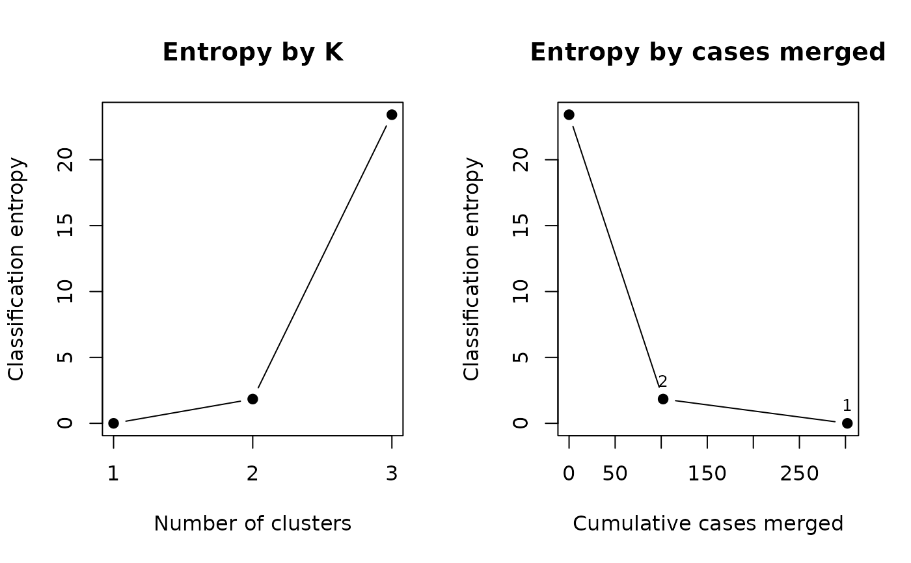

Combines the classes of a fitted model, two at a time, into fewer clusters, following the entropy criterion of Baudry et al. (2010), and returns the whole path from the fitted number of classes down to one. Nothing is refitted: each merged solution is the fitted mixture with some of its classes read together, so it fits the data exactly as well as the fit itself.
Value
An object of class "class_merge": a list with
pathA data frame with one row per number of clusters
K, from the fitted number down to 1:merged, the two clusters combined to reach that row;merge_entropy, the absolute classification entropy at that K;entropy_drop, its fall from the row above; andcases_merged, the (weighted) number of cases carried by the two clusters combined.clustersA list, one element per row of
path, giving the fitted classes that make up each cluster.posteriorA list of the n x K posterior matrices of the merged solutions, columns named by their classes, e.g.
"{1,5}".
The fitted model is not modified.
Details
A Gaussian class is a symmetric bell. When a group of cases has some other shape (skewed, flat-topped, with a long tail), the best-fitting mixture can spend two or three classes describing that one group, and the information criteria will prefer that larger model. Merging is one way to read such a solution: keep the classes the criteria asked for, then combine the ones that describe the same group. It needs only the posterior class probabilities, so it applies to every measurement model the package fits.
At each step the two clusters \(k, k'\) chosen are those maximising
$$\sum_i w_i \{(t_{ik} + t_{ik'}) \log(t_{ik} + t_{ik'}) -
t_{ik} \log t_{ik} - t_{ik'} \log t_{ik'}\},$$
the drop in classification entropy from reading them as one; their
posterior columns are then added. The posteriors are those of the
measurement model: for a fit whose structural model was attached in a
later step they are recovered without it, as in
classification_diagnostics().
No number of clusters is chosen. Which classes belong together is not
identified by the data (Hennig, 2010): it depends on what one takes a
cluster to be. Baudry et al. suggest looking for an elbow in the plot of the
entropy against K, or for the K where entropy_drop falls away, or taking
the K that ICL favours across separately fitted models (the ICL column of
compare_mixtures(), printed with columns = "all"); all three are a
choice the analyst makes and reports.
This is not the entropy used against choosing the number of classes.
The advice not to choose K by entropy concerns the relative entropy
reported in fit$metrics$entropy, an index of how well separated the
classes of competing models are. merge_entropy is the absolute
classification entropy of one fitted model read at different levels of
merging; the likelihood is the same at every row, and the column only
records how much ambiguity in the class assignments each merge resolves. At
the fitted K it equals \((\mathrm{ICL} - \mathrm{BIC}) / 2\).
References
Baudry, J.-P., Raftery, A. E., Celeux, G., Lo, K., & Gottardo, R. (2010). Combining mixture components for clustering. Journal of Computational and Graphical Statistics, 19(2), 332-353. doi:10.1198/jcgs.2010.08111
Hennig, C. (2010). Methods for merging Gaussian mixture components. Advances in Data Analysis and Classification, 4(1), 3-34. doi:10.1007/s11634-010-0058-3
Examples
set.seed(1)
X <- rbind(matrix(rnorm(200, 0), ncol = 2), matrix(rnorm(200, 4), ncol = 2))
fit <- fit_mixture(X, n_classes = 3, measurement = "continuous",
n_init = 2, random_state = 1)
m <- merge_classes(fit)
m
#> Merge path (Baudry et al., 2010)
#> The likelihood and every parameter are those of the fit at every K.
#>
#> K merged merge_entropy entropy_drop cases_merged
#> 3 (fitted classes) 23.417 NA NA
#> 2 {2} + {3} 1.842 21.575 102.1
#> 1 {1} + {2,3} 0.000 1.842 200.0
#>
#> merge_entropy is the absolute classification entropy, not the
#> relative entropy of print(fit). No K is chosen; see ?merge_classes.
plot(m)
